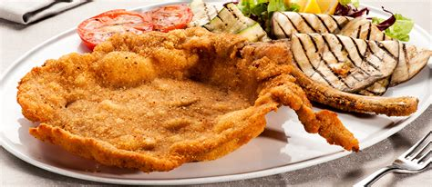

Cotoletta recipe

Recipe description
A Cotoletta alla Milanese is a breaded veal (or other cutlet) that’s fried until golden and crispy, traditionally in clarified butter. Use a bone-in, thick rib chop, coat it evenly with breadcrumbs, then fry in clarified butter for the classic texture and flavor.
Steps to Prepare Cotoletta
- Prepare the Cutlets
Trim any excess fat from the veal cutlets.
Use a meat tenderizer to even out the thickness without pounding them too thin.
-
Coat the Cutlets
Dredge each cutlet in breadcrumbs, ensuring an even coating
- Fry the Cutlets
Heat clarified butter in a large pan over medium heat.
Add the breaded cutlets and fry until golden brown on both sides.
Drain on paper towels to remove excess fat.
-
Serve
Sprinkle with salt and serve warm, optionally with a wedge of lemon for added flavor.
-
Tips for Success
Clarified Butter: This has a higher smoke point than regular butter, making it ideal for frying.
Thickness: Ensure cutlets are no thicker than 3 cm for even cooking.
Serving Suggestions: Cotoletta is often enjoyed with a side of lemon wedges and can be paired with a fresh salad or potatoes.
Ingridients
-
Veal cutlets (bone-in) 4 pieces, 3 cm thick
-
Clarified butter 300 g
-
Breadcrumbs As needed
-
Salt To taste
Home